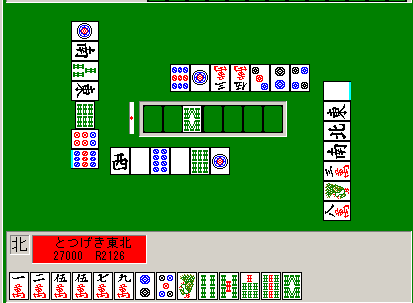
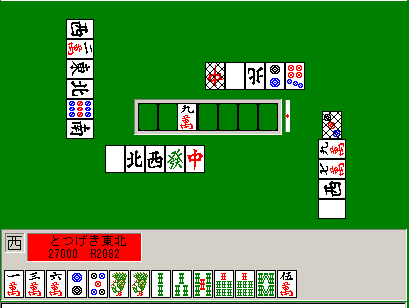
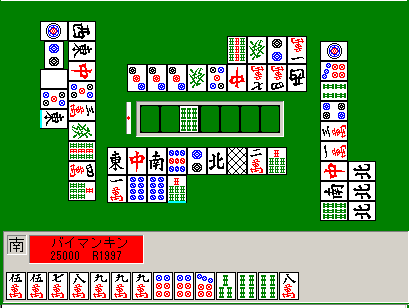
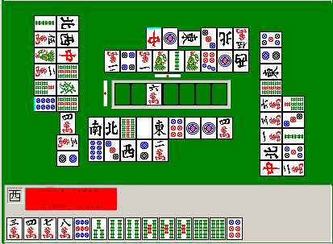
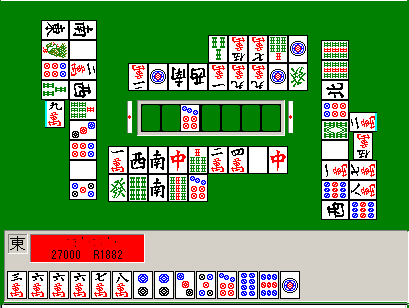
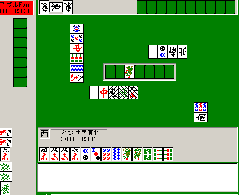
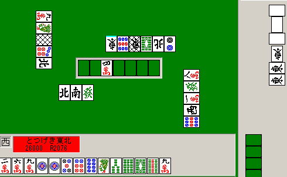

ベタオリ技術論
もっとも安全にベタオリするためのテクニックの紹介

超ラン勝ち組になるための目標：東12局あたり全支出-1275以上
最強水準になるための目標：東12局あたり全支出-1250以上
麻雀の基本的な防御姿勢：
防御にとってもっとも重要なことの一つは「振ってはいけない」のか、「高い手に振らなければよい」のか、「比較的振りにくいように攻める」のかを明確に区別して打つことで、どんな状況ならどんな防御をすべきかということなのだが、それは別に記述するとして、ここでは基本的にベタオリ（最善＝振らない、次善＝安く振る）の技術を論ずる。
１家リーチに対するベタオリ・理屈編： 重要
牌の基本的な安全度： 超重要
昔の講座にも書いた「牌の安全度」表を超ラン向けに改良して安全度比較をするとおおむね次のようになると思う。
特に何か制限がない限り、この順で切れば問題ない。むしろいかなる読みにも優先してこの順を守れ。放銃が減るから。
ランク（Ａ～Ｆの記号）・記号が同じものはだいたい同じ程度の安全さ。上にあればあるほど安全。
ＳＳ：
◎◎現物 絶対安全
Ｓ：
◎ ２枚以上切れヤクハイ 特殊な待ち以外は安全。振ってもだいたい安い。
◎ １枚以上切れオタカゼ 特殊な待ち以外は安全。振ってもだいたい安い。
◎ スジ１９牌 特殊な待ち以外は安全。振ってもだいたい安い。自分から３枚も見えていれば、シャンポンの可能性もない。
このランク内では、その牌が見えている個数が多ければ多いほど安全だと考えて良い。
Ａ：
○ オタカゼ牌 かなり安全。他家が怖がって押さえていて出ていないということも多い（おれはこれを通すのが好きだ 笑）。
○ 両スジ４５６牌 かなり安全。普通こんなクソ待ちではリーチしないが、当たった時にはイッツーなど高い時も。
以上はかなり安全で、自分が２シャンテン程度でもまずまずの手なら切ることもけっこうある。自分から見えていればいるほど安全。
Ｂ：
◇ １枚切れヤクハイ 振ったら少々痛いが、無スジの９などを通すよりはずっと安全。
。 スジ２８ リャンメン・ペンチャン待ちには安全。カンチャンの場合ピンフもタンヤオもつかない。
。 スジ３７牌 ペンチャンでも当たりになるが、２８と大差なし。周りの牌がより切れている方を切ろう。
以上はまあまあ安全だがベタオリの時は切らない。自分がそれを１つ切れば形テンがとれるとか、リャンメン形１シャンテンなどの時には切ることも多い。
Ｃ：
● ションパイのヤクハイ
● リーチ牌or直前牌のスジ２８３７
超ランでは早いテンパイを目指す人が多く、けっこう当たりになる。自分が勝負手の１シャンテンくらいの時に切る。
Ｄ：
△ １９牌 少なくともカンチャンやペンチャンは避けられ、タンヤオもつかないが、やはり最も多いリャンメンには危険。
△ 片スジ４５６牌 無スジの２や３よりかなり安全だと思う。カンチャンやペンチャンであることが少ないから。
△ ドラヤクハイ 当たりになっている確率は低いが、振ったら痛いので覚悟して切る。逆にオーラス４位などで攻めたいならかなり安全だと思っていい。
以上は自分が勝負手１シャンテンであるとか、序順にリーチ者が３を切っている場合の２でそれを切れば形テンなどの時に切ることもあるが危険度は高い。
Ｅ：
▲ ２８牌 １９と違ってタンヤオが付き得るし、カンチャンも可能。
▲ ３７牌 ペンチャンもある。
超ラン他家はクソ待ちが多い（４割）のね。４５６よりもクソ待ちとしては「まし」だからなのか、このあたりは危険度が上がる。
Ｆ：
× 無スジ４５６牌 全ての待ちが可能なだけでなく、同じリャンメンでも１２３の２倍近く危険。
その他の留意点
・以上は「平場」およびそれに準ずる、点数状況のない場合に限る。「マンガンさえ振らなければ大丈夫」な時には地獄待ちドラではなくスジ２を切るべし。
・序順に切った牌の外側の牌であれば、早いリーチを除いて１ランク上になると考える。
・「ワンチャンス」は、同じランク内で危険な牌を比較する時にだけ参考にする。早い順目の場合は１ランク安全にして考えることもある。
・リーチ牌・リーチ直前牌のそば、ドラそばについては、安全度が１ランク下がると考える。
・ドラについては安全度が２ランクくらい下がると考える。ただし当たる確率が少ない牌（待ちを構成しにくい場合）についてはその限りではない。
・「アンコスジ」の危険性は気にしなくていい。
・「裏スジ」の危険性は気にしなくていい。
・同じランク内では当たり牌になりにくいものを優先すること。例えばカンチャンペンチャンの可能性を減らすようなワンチャンスについては考慮することがある。つまり同じ「スジ」でも、８が３枚切れた７はかなり安全度が上がるとみていい。また、スジ故に安全度が上がっている牌については、場に見えている数が多ければ多いほど安全になる。
・当たり前だが２４と切られている３などは危険牌の筆頭候補であって何も安全ではない。ここに記述しなかったような差は何一つ考えなくて良い。
以上は１家リーチに対する安全度の基本である。組み合わせ数的な問題で「安全」であるもの（４が切れた１は安全）については食い仕掛けなどにも充分適用できる。
牌の危険度については各テンパイに対して少し調べたことがあるのだが、残念ながら「状況による」ことが多かった。
つまり、リーチ宣言牌や、序盤に出した牌や、場に出ている字牌の数の差などによって経験的にわかるような危険度の感覚によって、統計が役立たなくなる程度の差がある感じがした。それでも言えることが、上の表のランクで示したような大きな安全度の差だと思う。
上の表の各ランクの間には、放銃率（または失点）にして1.5倍とか、そういうレベルの差がある。つまりささいな「アンコスジ」による危険度の差や、「切り出し順」などによる危険度の差は、この表の差によって打ち消されてしまうことがほとんどである。
おれは上のランクを超えて違う牌を安全だと見なすことはしていない（点数状況的な問題で、ドラ待ちの可能性が高いとか、ドラで振りさえしなければ良いような場合は除くが）。
ションパイの字牌ドラで振ったらかっこわるいとか考えず、他により上位ランクのアンパイがなければそれを切って良い（トイツで頭かもしれないし持っていないかもしれないしアンコかもしれない）。
上の表通りの安全牌感覚が自然なものになるまでは「丸暗記」で充分だと思う。ほんとに、これを守ると強くなるだろう。
よく低Ｒ（失礼）の人で、アンパイがない時にムダにかっこつけてリーチ宣言牌のスジではなくて別の無スジを切ったりしてリーチピンフドラ１くらいに振っている人がいるが、もっと単純に打って良い。スジで振ることは別に恥ずかしくないから。
上の表はベタオリの技術の非常に大きな部分であり、いかなる「読み」や「アンコスジ」やその他技術にも増して重要である。
超ランの平均レベル程度だとある程度ベタオリができる人もいるだろうが、この表はよく噛みしめて覚えて欲しい。
例えばランクＤとランクＥの差の感覚は必ず持っておくべきだ。
超ラン他家リーチの「２面待ち以上率」は60％程度で、残り40％はクソ待ちなのだ。
クソ待ちであるとはつまり、カンチャンやペンチャンやシャンポンなのだが、クソ待ちの７割くらいは、５のカンチャンだとか４と６のシャンポンではないものだ。ドヘタでさえ６待ちカンチャンリーのみはほとんど避け、３待ちカンチャンリーのみは喜んでかけてくるのだ。
リャンメンに対する危険度としては片スジ４５６も無スジ２３も全く同じなのだが、クソ待ちであった場合の危険度がかなり違ってくる。このことを覚えるだけでも放銃率が0.5近く減るのではないかな？
同様の感覚として、同じ「スジアンパイ」であっても場に２枚も切れているようなスジアンパイは相当に安全度が上がると考えて良い。
５のカンチャン待ちで２枚切れ、リーチしますか？ ２のカンチャンならどうか？ １枚見えに比べてどうか？ そしてこれらのうち、リーチしたくなる順番はどうか？
２枚場に出ているということはシャンポンの可能性も激減し、かなり安全度に差がつくと思っていい。単なるスジであっても、その牌が場に２つ見えていて隣の牌が３つ見えているようなら、ランクＳクラスに安全だと考えて良いだろう。一方場にではなく自分から２枚見えているということでは、そこまでは安全度の向上につながらないだろう。
ベタオリを極めだすと、こういう差も少しは、またはある程度は考慮するようになってくる。ここまで程度がおれのする「読み」である。
（安定Ｒ1950程度のレベルなら、このへんは考えなくてもいいから単純に表にしたがってベタオリする練習から始めなさい）
アンパイがない時の方法： 重要
アンパイが全くない（つまり上の表でＤ以下くらいの牌しかない時）にどうするかということだが、トイツやアンコなど、１つ通せばもう一つも通るような牌を切ること。
また、アンコなどもない場合に例えば８が現物という時、５を切れば２も通りやすいので、そのようにアンパイ候補が自動的に増えるような切り方を試みること（もちろんこの場合、２を先に通すのではなく５を先に通すのだ・・・表をちゃんと覚えようね）。
ちなみにアンコを落とすとその外側の牌などをヘタクソが通してくれることもあるし、５を切ると２を他家が通してくれやすくもなる。
（アンコスジは危険だって？ なにいうとるん？ ２種類の危険牌を通すより、１種類のアンコを落とす方が確実に安全だろう。それくらいの感覚は持っていて欲しい）
今後ベタオリができないほどアンパイがない時も、上の表にしたがって安全な牌を探すが、それでも区別がつけ難くなったらアンコまたはトイツを優先して落とすこと。
降りられないから２でなく５を切って１シャンテンに、というようなことは、自分の手が相当高い時くらいしかしない。
形テンとのかねあい：
ある程度流局が近づいてきた場合には他家リーチに対して形テンを目指すこともある。残り５順程度の場合、Ａランク程度以上安全な牌はよく通す。
残り１順などで「これを通せば流局テンパイ」という時にはＣランクくらいなら通すこともある。
しかしまだ残り７順とかあるのにその段階からそういうことは絶対してはいけない。残り枚数が多い間はひたすらベタオリ。
安定Ｒが2000に行ってないレベルで、放銃率が12.5％より高いような人はこのへんの技術は考えなくて良い。まずはベタオリだけしてれば強くなる。
１家リーチに対するベタオリ・実践編： 重要
例：１家リーチに対する降り

ここまでばらばらの形である場合は、もっとも安全に降りることを考えなければならない。
ということはつまり、「今後リーチしてくる他家」のことも考え、共通安全牌や完全安全牌は残しながら打っていくということである（おれが１ピンよりも６ソウを先に通しているのはそのためだ）。これはとても大事なことだ。
さてここの８ソウツモで現物がなくなったわけだが、ここでどれを切るか？
もちろん先ほどの表を覚えていれば迷う必要は全くない。おれは何のためらいもなくドラ（９ソウ）を通した。
例：

（３ピンはリーチ者のトイメンがポンした）
さあ表をしっかり覚えたか？
ここから切るべき牌を選びなさい。
おれのベタオリテクニックを身につければこのリーチに対して切るべき牌を迷うことはない。
現物がないが、迷ったり読んだりしても意味ない。表の通りに考える。
表によれば、端牌（２３，７８）と片スジの中牌なら中牌を優先して落とすべきだし、片スジ中牌と同じランク内には１９牌も入る。
ワンチャンスは同じランク内の差にしか通用しないが、早いリーチなので２ピンも考えられる。しかしこの場合リーチ牌のソバなので１ランクダウン、結局１９などより危険である。
したがって候補は６マンまたは１ソウだと自動的に決まるが、この場合のようにアンパイが少ない場合はどうするのだったかな？
そう、トイツやアンコを優先して落として先の順目のアンパイを確保するのだ。したがって切るべき牌は１ソウだと一意に定まる。これぞシステマティック(笑)。
何の読みも必要ない。１家リーチに対するベタオリは、必ず上の表を守っていれば問題ない。
それだけで充分勝てるし、よほど特殊な技術を身につけていない限り、そうしないとなかなか勝てないと思う。
この「何を切る？」で正解が出せなかった人はまだ上の表がしっかりわかってないので頭にたたき込むこと。
※ただし、おれも別に、毎回必ず微妙な差を確実に判別できているわけではない。しかしここで１ソウ以外を切るということはほとんどないと思う。
※だいたいの場合に表の通り切れる、というレベルにはなろう。少なくとも失敗したとき「間違った」とわかるようになろう。
例：

とりあえず７マンを切るべきなのは表の通り。７ピンはワンチャンスでしかも序順に切った牌の外だから通るような気もするが、ランク的に７マンを切るべき。
７マンの次の候補は９マン。次に７ピン。３ソウも似たような感じがするが、「序順の牌の外側」の効果があるから３ソウを７ピンより先に切ってはいけない。
表にしたがって ７マン＞９マン＞７ピン＞４ソウ＞３ソウ の順で切るべきだ。
これ以上例を示す必要はないだろう。考えるべきことなど何もなく、表を覚えて慣れるだけで充分だから。
２家リーチに対するベタオリ・理屈編： 重要
よく見かけるのは、わからなくなってかなり迷って、そ～っと無スジ１９牌を切って牌が止まってしまっている人だが、ちゃんと考えてアンパイを選ぼう。
２家リーチがかかった場合の安全性については、昔の論文で考察したが、あれは今でもおれの麻雀技術に役立っている。
大切なのは「相手は必ずリャンメン（またはドラ）待ちだ」「一発は絶対避ける」「親は子より1.5倍危険」「ドラソバは２倍危険」程度の感覚を持つことだ。
探すべきは次のような優先順位で（片スジであればその人に対して「端牌」と同等とみなす）。
◎両方現物
○両方にスジ（字牌はヤクハイも含めてここ）
●一発目に現物の端牌
●親に現物の端牌
●親にスジの端牌
△片方に現物の牌
△片方に両スジの牌
▲端牌
×中牌
どんな仕掛けであっても、点数状況的にどちらか片方に振ってはいけないという場合を除いて、基本としてこの通りの順で切ること。
打ちながら焦るところだが、中途半端に安全そうな牌ではなく、とにかく「どちらか片方に対しては安全度最大」である牌を切るようにすることを心がける。
２家リーチにワンチャンスなど関係ない。ワンチャンスが安全という論拠は「他家がそれを手に持っている確率が低い」からだが、２家もリーチしてきたのでは、そのうち片方がその牌を持っていることなど非常によくあることなのだ。
下手に読まない方がいい。振ったらしょうがない。
２家リーチに対するベタオリ・実践編： 重要
例：

集中して共通にもっとも安全な牌を探そう。
現物を探す → 切られた中牌に着目し、両スジを探す → 同じくスジを探す → ４枚見えた牌を探す という順番で。
ないなら 振りたくない方への現物や安全度のもっとも高いものをいくつか候補として見つけ、その中でもう片方に一番安全そうなものを選ぶ。
この場合明らかに４ソウが最も安全である。８マンを切っているうちは最強になれないだろう。９ピンを切っているうちはドヘタだろう。
例：

とりあえず焦らずに、ぱっと牌を見る。まずは一発目を避けなければならないので上家の捨て牌に着目する。
そうすると、どうやら左に対してマンズはどれも危険だとわかる。そこでピンズからアンパイを探すと、候補は５ピン９ピン３ピンあたりだ。
そこで下家の捨て牌を見る。９ピンと３ピンが安全そうだ。この場合９ピンは単騎待ちでしか待てないため、９ピンを切るべき。
より振りたくない方に対して安全な牌をまず探し、その中でもう片方に安全なものを探すとやりやすい。
どれもが危険で焦ってわからなくなりそうなら、とにかく「片方にだけは一番安全」だと思われるのを見つけて切ること。
なおこの打ち手はここで２ピンを切っていらっしゃった。あらやだ。
平場の２家リーチに対して無スジ１つでも切ってやっとクソ形１シャンテンなど絶対にやめてくれ・・・。しかもこの形からなど論外。
食い仕掛けに対するベタオリ・導入編（詳しくは対処技術参照）：
食い仕掛けの場合は、「このあたりは安全そう」ということが、リーチの場合よりもずっとわかりやすくなる。
それから、これで振ったらこれぐらいの失点になる、というような情報も入ってくる。
リーチに対するベタオリのように単純にスジを切っているだけではトイトイやシャンポンに当たってしまう。
ポイントは以下のような点だ。
★「序順に切った牌の外」の安全性はリーチの場合と違ってかなり高い（ただしトイツ形の役は除く）。
★（トイツ形があり得る場合）場に見えている枚数と、その牌の安全度は強く相関する。また最近切られた牌ほど安全である。
・最後にポンやチーした直後に出た牌のソバの危険度はリーチ宣言牌のそれより危険（食い仕掛けでは浮き牌にひっつけてテンパイは圧倒的に少なく、４４５から４５にしたりは多い）。
・場に、ぽつんと出ていない牌の危険度が、普通のリーチに対するよりも危険になる（食い仕掛けはシャンポンも多い）。
★ある牌がロンされた時の失点をある程度考えること（ドラが見えている時、中ポン３４５マン７８９マンと食っていれば、まあ５ソウで振り込んでも高くはない）。
★手の進行具合を経験的にでいいからつかむこと。
★については特に重要なので意識しなければならない。
超ランの平均レベルでは、食い仕掛けに対する失点をあまり考えない人が多い。
平場で親が東をポンして他に何かチーしているのに何の警戒もなく無スジをばしばし通している。ダブ東ポンされたら基本的にはベタオリしなければならないものだ。
食い仕掛けに対する対処法や相手の手の進行具合の想定は「対処技術」で述べる。
食い仕掛けに対する降りは、どの牌が安全かということよりむしろ、どの状況から降りるか、ということの方が重要なのだ。
降りること自体はリーチの場合よりもかなり簡単だからだ（序順に切った牌の外はかなり安全で、その情報は安全牌の個数を大きく増加させる）。
ここでは、後の「対処技術」とも少々かぶるが、簡単に食い仕掛けに対する考え方を書いておく。
例：

こんな状況になったら次に７ピンをさくっと引いたりしない限りはそろそろベタオリ時である。
今気をつけるべきは当然上家である。
この後おれは６マン、４ソウと引いたが、このあたりで４ソウを切るのはやや危険かな。素直に降りよう。
なおこの仕掛けだとトイトイ、ひょっとするとホンイツまでを充分に考えなければいけない。ドラドラにも注意。
序順の５ピン切りから、変則的な待ちや手であることも大いに考えられる。５ソウが通ったから、スジなどと言ってむやみにドラを切る場面ではない。
なおこの状況でなら現物を除いて一番安全なのは２ピンだ。
なぜかと言うと、２ピンは２順前にトイメンが通しており、少なくともその段階で上家は２ピンをトイツでは持っていなかったことがわかるからだ。
たまたまこの状況で上家が２ピンをトイツにし、かつそれ待ちになっている、といったことは少ない。
しかも２ピンはスジなので「通常の待ち形」に対しての安全度も高い。
また、普通のドラドラ手やのみ手であるなら３ピンはかなり安全だろう。最初に４５５のようにあっても食い仕掛けする以上、いきなり４５にしたりしないだろう。
このように、食い仕掛けはメンツの作り方がかなり「ダンゴ形に」なるはずなので、捨て牌から相手の「安全そうなゾーン」をかなり正確に推察できる。
例：

当然だがベタオリ。
この時点ではホンイツが一番危険なので、ホンイツには警戒する。
（もしトイトイであれば、１や８などの端牌はなるべく持っておくだろう）
またドラ１の３９００でも充分に痛いので、決してホンイツだろうと決めたりせず、ドラソバを避けたり序順の牌の外側を切るように心がける。
ちなみにこの捨て牌ならそれほどトイトイは警戒しない。トイトイをやるなら、西や１マンなどはかなり良い牌なので持っておくのが普通だ。
したがってホンイツか役役ドラ形かをメインに警戒する。「スジ」の安全度は、トイトイの可能性が高い場合に比べて高くなるわけだ。
もっとも、この場合にはアンパイがほとんどわからないと言っても良いけど(笑)。